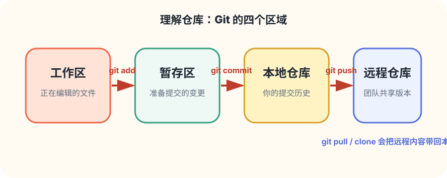
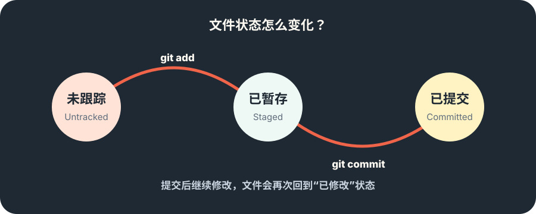
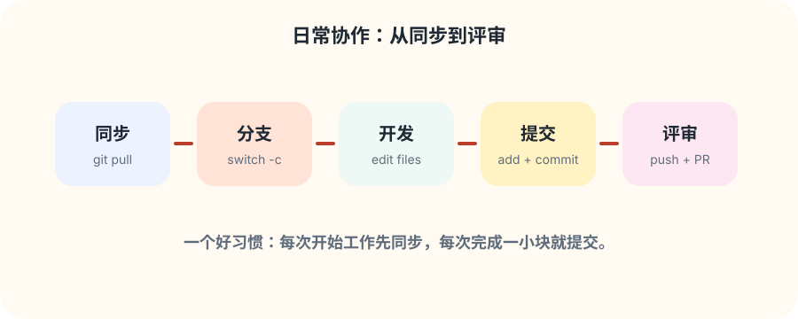

记录历史
每一次提交都像项目快照，方便回溯、比较和恢复。
从零开始掌握版本控制
这个网站把 Git 的核心概念、日常命令和协作流程整理成循序渐进的学习路径，帮助你快速建立信心并投入项目协作。
为什么学 Git
每一次提交都像项目快照，方便回溯、比较和恢复。
使用分支开发新功能，不影响主线代码。
通过 pull request、代码审查和合并流程推动团队交付。
学习路线
学习工作区、暂存区、本地仓库和远程仓库之间的关系。
查看理解仓库专题使用 add、commit、status、diff 形成小步提交习惯。
通过 branch、switch、merge、rebase 管理并行开发。
学习 clone、pull、push、pull request 和冲突解决。
重点展开
学 Git 最容易卡住的地方，是分不清“我改了文件”“我暂存了文件”“我提交了文件”分别发生在哪里。 下面用多张图把仓库概念拆开：先认识四个区域，再理解文件状态，最后套入日常协作流程。


git add 后进入暂存区，运行 git commit 后成为提交历史的一部分。

改文件在工作区，挑变化进暂存区，存快照进本地仓库，给团队看就推远程。
命令速查
git init
在当前目录创建新的 Git 仓库。
git status
查看工作区和暂存区的当前状态。
git add .
把当前目录的变更加入暂存区。
git commit -m "message"
把暂存区内容保存为一次提交。
git switch -c feature
创建并切换到新的功能分支。
git log --oneline --graph
用紧凑图形方式查看提交历史。
实战练习
git-demo 的目录并初始化仓库。notes 分支补充学习笔记。notes 合并回主分支，观察提交历史。FAQ
用一句话说明“做了什么”和“为什么做”，例如：docs: add git practice checklist。
当你要开发新功能、修复 bug 或尝试方案时，都建议创建独立分支。
不可怕。冲突只是 Git 无法自动判断最终内容，需要你打开文件手动选择保留哪些改动。